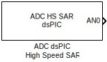

MCHP_ADC_HighSpeed_SAR_dsPIC - High-Speed SAR for dsPIC33C

ADC_HighSpeed_SAR Block Icon
Block Description
The MCHP_ADC_HighSpeed_SAR_dsPIC block is an alternative high-speed SAR ADC implementation specifically optimized for dsPIC33C family devices. This block provides a dsPIC-centric interface to the same hardware as MCHP_ADC_HighSpeed_SAR, with parameter naming and configuration patterns familiar to dsPIC developers.
Block Selection: For dsPIC33C devices, you can use either:
- MCHP_ADC_HighSpeed_SAR_dsPIC - dsPIC-style interface (this block)
- MCHP_ADC_HighSpeed_SAR - PIC32-style interface
Both blocks configure the same hardware but with different parameter organization.
Supported Devices
- dsPIC33CH - Dual-core devices with master/slave architecture
- dsPIC33CK - Single-core high-performance DSCs
Key Features
- 3-6 dedicated ADC cores depending on device
- Shared ADC7 for auxiliary channels
- 6/8/10/12-bit resolution per core
- Up to 3.25 Msps per core
- PWM-synchronized acquisition
- DMA support
Configuration Parameters
dsPIC-style parameter interface with array-based configuration for dedicated cores.
Related Blocks
Back to ADC Blocks